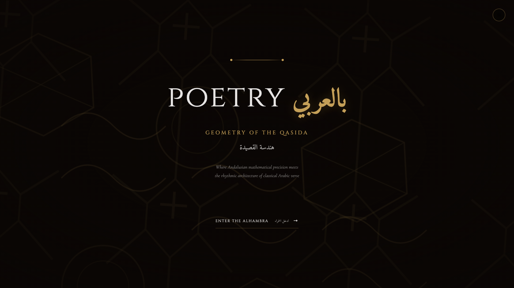
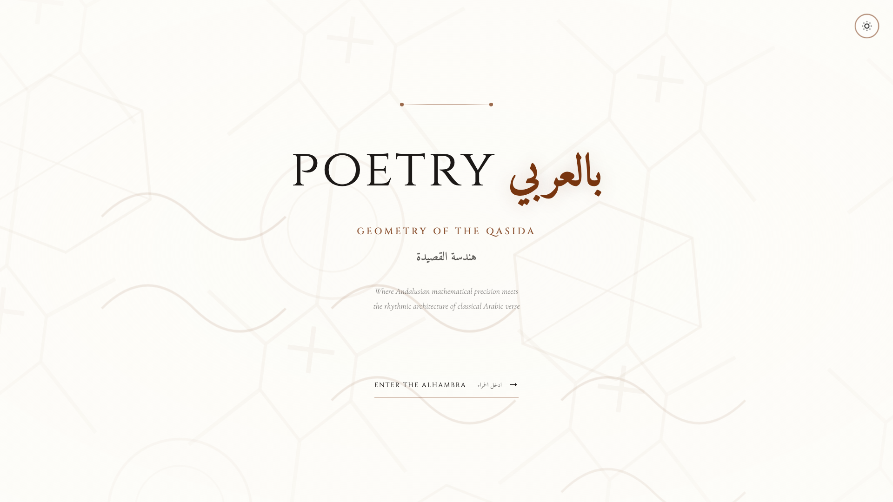
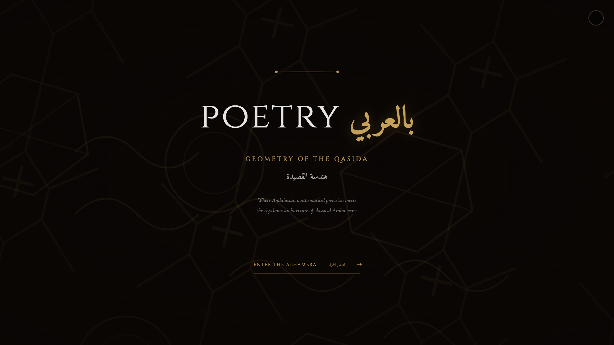

Design Philosophy: Andalusian Architectural Heritage
This splash screen embodies the mathematical sophistication and artistic elegance of
Andalusian Islamic architecture, particularly the geometric patterns found in the Alhambra
palace of Granada. The design uses authentic Khatam (8-pointed star interlacing)
and Girih tiles to create a layered, breathing composition that celebrates both
mathematical precision and poetic expression.
Core Principles:
- Mathematical Authenticity: Uses √2 ratios, octagon grids, and golden ratio proportions found in historical Islamic geometric art
- Three-Layer Composition: Background (large Khatam tiles), mid-layer (Girih pentagon/decagon), foreground (fine interlacing details)
- Architectural Depth: Vignette gradient simulates the atmospheric perspective of walking through a Moorish courtyard
- Brand Continuity: Preserves the "particles" brand logo style (بالعربي + poetry) with exact typographic treatment
- Constellation Button Style: Adopts the elegant underline CTA from Constellation Option 2 with bilingual text
- Thematic Copy: "Geometry of the Qasida" / "هندسة القصيدة" connects mathematical patterns to poetic meter
Historical Reference:
- Khatam Pattern: 8-pointed star with interlacing straps, core motif of Andalusian geometric art (12th-14th century)
- Girih Tiles: Pentagon and decagon compositions used in Persian and Moorish architecture
- Octagonal Geometry: Symbolizes the Islamic concept of paradise (8 gates) and infinite patterns from finite rules
Dark Mode - Primary Experience

Deep architectural atmosphere: Black background (#0a0604) with golden
geometric patterns (#C5A059) creates a mystical, contemplative mood. Three-layer pattern
system rotates and breathes subtly, simulating the play of light through carved screens
in Moorish architecture.
Light Mode - Illuminated Courtyard

Sunlit stone elegance: Cream background (#FDFCF8) with brown geometric
patterns (#78350f) evokes the warm limestone of Alhambra walls. Reduced pattern opacity
maintains readability while preserving architectural richness.
Interactive State - CTA Hover

Elegant interaction: CTA button transforms on hover with color shift
to golden (#C5A059) and increased underline opacity. Arrow slides right with smooth
cubic-bezier easing, creating a refined, inviting gesture.
Ready for Implementation
This Andalusian Islamic geometric architecture design is complete and ready for integration.
The design successfully combines mathematical authenticity, architectural elegance,
brand continuity, and thematic coherence. All patterns use historically accurate
Khatam and Girih tile constructions with proper geometric ratios.
Designed as an Andalusian architect with mathematical precision and creative freedom.
الهندسة المقدسة للقصيدة العربية